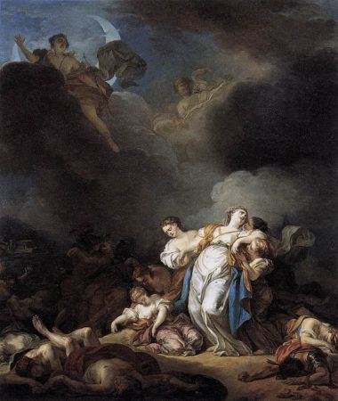

Artémis còn cùng với Apollon trừng phạt nàng Niobé95 về tội ngạo mạn, đã khinh thị xúc phạm đến nữ thần Léto. Có lẽ từ cổ chí kim chưa từng có một cuộc trừng phạt nào quá ư khắc nghiệt, tàn nhẫn như cuộc trừng phạt này, đây là một cuộc tàn sát khủng khiếp, khủng khiếp đến nỗi tới nay chưa mấy ai quên. Niobé là con gái của Tantale. Nàng lấy Amphion vua thành Thèbes bảy cổng. Hai vợ chồng nàng sinh được bảy trai, bảy gái. Niobé rất đỗi tự hào về hạnh phúc của mình: những đứa con, đứa nào cũng đẹp đẽ, khỏe mạnh, thông minh. Nhìn chúng, người ta có thể tưởng đó là những vị nam thần hoặc nữ thần tươi trẻ của thế giới Olympe. Niobé sung sướng, tự hào, mãn nguyện về hạnh phúc của mình nhưng lại không biết hạnh phúc đó chính là do các vị thần đã ban cho gia đình nàng. Sự giàu có, danh tiếng, con đàn cháu đống đông vui là đặc ân hiếm có. Nàng lẽ ra phải biết ơn và đền đáp lại bằng những lễ hiến tế hậu hĩ và thành kính. Nhưng Niobé hầu như quên hết cả nghĩa vụ thiêng liêng đó, nghĩa vụ mà đối với người Hy Lạp xưa kia là một đạo đức chí cao, chí tôn, chí kính, một đạo đức trước hết của mọi đạo đức.
Chuyện xảy ra như sau: Một hôm con gái vị tiên tri mù danh tiếng Tirésias là nàng Manto96 đi khắp mọi nhà trong thành Thèbes bảy cổng, truyền cho mọi người biết lễ hiến tế nữ thần Léto và hai người con của nữ thần là Apollon có bộ tóc quăn vàng rượi và nữ thần Artémis, người trinh nữ săn bắn, sắp cử hành. Mọi người hãy đem dâng cúng các vị thần những lễ vật hậu hĩnh. Dân thành Thèbes bảy cổng, nghe lời khuyên dạy đó, ai nấy đều náo nức sắm sanh lễ vật. Những thiếu nữ xinh đẹp đội vòng lá nguyệt quế lên đầu, ăn mặc đẹp đẽ, mang lễ vật ra đền thờ. Riêng có Niobé là không sắm sửa lễ vật, không đến đền thờ. Chẳng những thế Niobé lại còn dùng quyền lực của mình cấm không cho các thiếu nữ tới đền thờ, nghĩa là Niobé phá bỏ buổi lễ trọng thể ngày hôm đó.
- Tại sao các ngươi lại phải dâng lễ cho Léto? Niobé nói với các thiếu nữ xinh đẹp của thành Thèbes bảy cổng như vậy. Cầu xin Léto ban cho hạnh phúc được giàu có, đông con, nhiều cháu, an nhàn, vẻ vang ư? Thật là vô ích. Cuộc đời của bà ta vất vả cực nhục, chỉ có một hòn đảo bé xíu làm chỗ dung thân, còn ta, một đô thị rộng lớn, thành quách kiên cố, giàu có và đẹp đẽ xiết bao! Bà ta chỉ sinh được một gái, một trai, còn ta, bảy gái, bảy trai, đứa nào cũng to lớn, đẹp đẽ sánh tựa thần linh! Thôi hãy dành những lễ vật dâng cúng ấy cho ta vì chính ta là người xứng đáng được hưởng những lễ vật đó. Ta chẳng thua kém gì Léto về sắc đẹp cũng như về hạnh phúc. Các ngươi hãy dâng lễ vật cho ta, và cầu nguyện ta có thể ban cho các ngươi niềm hạnh phúc mà các ngươi mong muốn.
Buổi lễ không tiến hành. Những lời nói kiêu căng, láo xược của Niobé tất đến tai các vị thần, nhất là nữ thần Léto. Nàng truyền cho hai con, Apollon và Artémis, sứ mạng trả thù, trừng trị quân hỗn hào, phạm thượng.
- Các con phải rửa ngay mối nhục này cho mẹ. Ta không thể chịu đựng được cái thói ngạo mạn, kiêu căng vốn có từ giống Tantale nhà nó. Dù cuộc đời ta thế nào chăng nữa ta cũng là một vị thần thuộc dòng dõi Titan, và là vợ của thần Zeus, Apollon và Artémis là con của thần Zeus mà không một người trần thế nào dù tài giỏi đến đâu có thể coi như bằng vai phải lứa được.
Nghe mẹ nói xong, hai anh em Apollon đều vô cùng giận dữ. Apollon đáp lời mẹ:
- Xin mẹ hãy yên tâm! Con mãng xà Python ghê gớm đến đâu cũng chẳng làm nhụt được chí khí của con thì mụ Niobé kia ắt phải có hình phạt xứng đáng.
Artémis cũng bày tỏ tình cảm của mình:
- Xin mẹ hãy yên tâm! Những đứa con của thần Zeus sẽ không tha thứ cho bất kỳ một hành động khinh thị thánh thần nào.
Và thế là nhanh như những mũi tên, Apollon và Artémis từ ngọn núi Cynthe cao vút trên hòn đảo Délos thân yêu, bay tới thành Thèbes bảy cổng. Cỗ xe do những con thiên nga kéo hạ xuống một cánh đồng ngoài cổng thành. Apollon tiến vào cổng thành và trèo lên bờ tường thành cao. Nơi đây thần trông thấy những người con trai của Niobé đang cùng với các trai tráng luyện tập võ nghệ. Thần lắp tên vào cung và giương lên. Dây cung bật lên một tiếng lảnh lót, khô gọn. Mũi tên xuyên trúng ngực một người con trai của Niobé khoác áo choàng đỏ thắm đang phi ngựa. Chàng bật ngửa người ra, tay buông cương và hồn lìa khỏi xác. Cứ thế, vun vút, những mũi tên bay đi, khi trúng cổ, khi xuyên gáy, khi cắm phập vào lưng, lần lượt kết liễu cuộc đời bảy người con trai của Niobé. Những trai tráng đang luyện tập võ nghệ cùng với những người con trai của Niobé vô cùng kinh hoàng trước tai họa giáng xuống quá nhanh và quá khủng khiếp đến như vậy. Chỉ phút chốc bảy chàng trai cường tráng, những thanh niên ưu tú của thành Thèbes vinh quang đã bị chết một cách thảm thương mà không ai biết được địch thủ. Song mọi người đều hiểu ngay: những cái chết bất ngờ không rõ từ đâu giáng xuống đều do hai anh em Apollon và Artémis, những vị thần có tài bắn cung trăm phát trăm trúng. Mọi người cùng hiểu, đây là hình phạt mà nữ thần Léto giáng xuống Niobé.
Tin dữ bay về cung điện nơi Niobé đang ở. Người mẹ bất hạnh này gào thét, khóc than và trong cơn đau đớn vật vã, điên dại nàng đã nguyền rủa nữ thần Léto. Các con gái của Niobé xúm quanh mẹ để an ủi, khuyên can, săn sóc. Nhưng tai họa chưa hết. Bây giờ đến lượt nữ thần Artémis ra tay. Những mũi tên không biết từ đâu lại bay xuống. Tiếng rú lên vì đau đớn chen lẫn những tiếng thét kinh hoàng, tiếng gào khóc, tiếng rên la... tạo ra một bầu không khí khủng khiếp hết chỗ nói. Đến lúc này thì Niobé không còn gào thét khóc than được nữa. Nàng ngất đi rồi lại tỉnh dậy, tỉnh dậy rồi lại ngất đi không biết bao lần. Amphion, chồng nàng, trước nỗi đau khổ quá lớn như vậy không đủ sức chịu đựng nổi đã tự sát, chết bên những đứa con. Niobé đau khổ, sững sờ đứng giữa xác chết của các con và chồng. Nàng bây giờ tuy sống nhưng thật ra là cái xác không hồn, một cái xác còn biết cử động. Xác chết của chồng và con của Niobé bị bỏ mặc suốt chín ngày trời, đến ngày thứ mười, các vị thần mới nguôi giận, cho làm lễ mai táng. Còn nàng Niobé với số phận thảm thương đã hóa ra đá. Một cơn gió lốc đưa nàng về tận quê hương, lên đỉnh núi Sipyle, nơi ở vĩnh viễn của nàng. Ở đó, Niobé với nỗi đau khổ mà trên thế gian này ít ai phải nếm trải, biến thành đá với khuôn mặt khổ đau và nước mắt tuôn trào. Ở đó, nàng Niobé với khuôn mặt sững sờ, ngây dại đã biến thành đá nhưng chẳng bao giờ cạn được dòng nước mắt đau thương, những dòng nước mắt tuôn trào như những con suối bạc từ sườn núi cao đổ xuống.
Ngày nay trong văn học phương Tây, Niobé trở thành một biểu tượng cho “nỗi đau khổ của người mẹ mất con”. Trong quá trình chuyển nghĩa, Niobé dần trở thành “nỗi đau khổ lớn” hoặc “nỗi đau khổ”.

Niôbê ngất xỉu khi chứng kiến các con bị giết
Có chuyện kể, trong cuộc tàn sát của Artémis, có một người con gái của Niobé thoát chết, không rõ do Artémis động lòng trắc ẩn tha thứ hay do trốn thoát được. Sự khủng khiếp và nỗi kinh hoàng lớn quá đã làm cho người con gái đó, mặc dù trải qua bao năm tháng sau này, da vẫn tái xanh tái xám. Vì thế người ta gọi nàng là “Chloris” nghĩa là “nhợt nhạt”, “tái xanh”. Nghe đâu Apollon cũng tha chết cho một người con trai của Niobé tên là Amyclos.
[95] Những người con của Niobé gọi là Niobides.
[96] Người La Mã kể có một nàng Manto con của Hercule, con trai nàng đã lấy tên mẹ đặt cho một đô thị trên đất Ý: Mantoue.